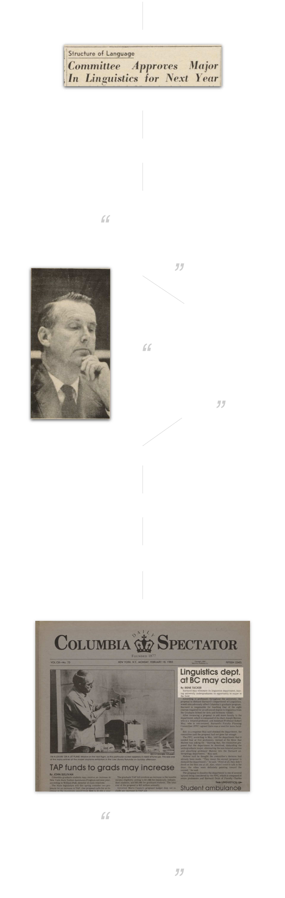

<<<<<<< HEAD

<<<<<<< HEAD
=======
>>>>>>> 8da21740cced3da9a583d2e290306540a246aa62
=======

>>>>>>> 8da21740cced3da9a583d2e290306540a246aa62
February 1965
The linguistics major is first approved by TK TK of the TK office.
October 1965
delayed.
February 1971
4 people left, “crisis situation.”
weak program.
October 1971
Spec interviews Wm.
Barnard is important.
February 1972
3 more people left???!!!
1983
major is discontinued at Columbia.
October 1984
FPC eliminate a tenure track positions
February 1985
Formal proposal to disband linguistics.
fate will affect more than barnard
4 out of 8 courses. Grad. Columbia.